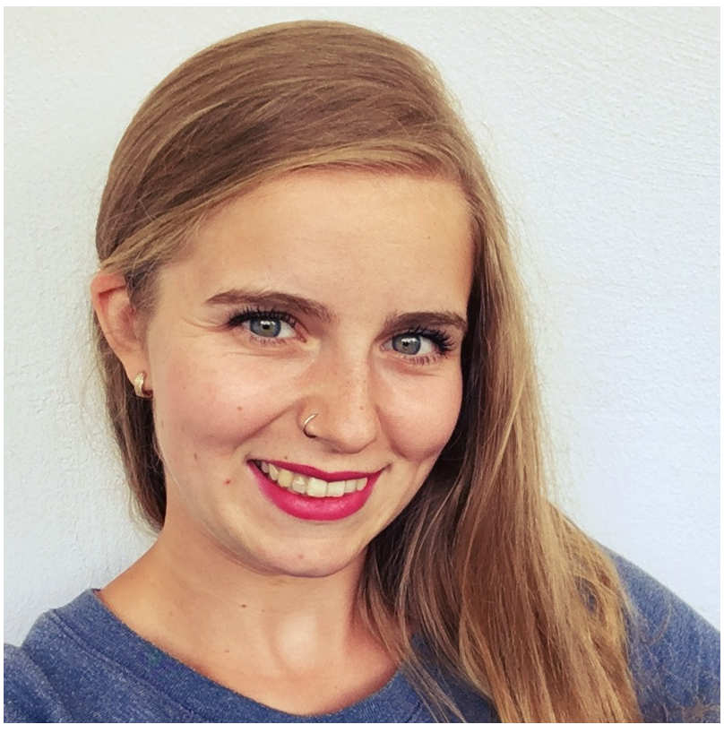
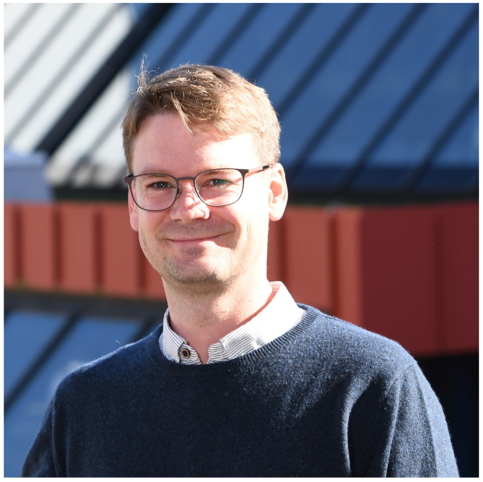

Join Dr. Sophie G. Habinger and Dr. Maximilian E. Müller from the University of Konstanz, Germany, for an inspiring week of lectures, hands-on laboratory sessions, and interactive workshops on Open Science and Research Data Management (RDM).

University of Konstanz
Germany

University of Konstanz
Germany
Core principles of Research Data Management within Open Science, the FAIR principles and practical low-effort methods for organising, documenting and backing up research data with hands-on exercises.
General public event including an impulse talk: Embracing Open Science: From Institutional Strategy to National Initiative followed by an open participatory discussion.
Explore data types typical of Humanities research and the tools and practices that address their specific challenges.
Learn the purpose and key components of a Data Management Plan (DMP) and build one yourself using templates and guided exercises. Mock projects are provided; you may also bring your own.
Discover what Persistent Identifiers (PIDs) are and how to use them to boost documentation, RDM practice and the visibility of your research output.
Why and how to publish research data: quality criteria for data publications, selecting an appropriate repository, and responsibly sharing sensitive or personal data. No prior RDM knowledge required.
A practical introduction to the principles, technical foundations and organisational requirements of a trustworthy research data repository, including repository architectures, metadata strategies and governance documents.
A live demonstration of the University of Konstanz's KOPS and KonDATA repositories, followed by discussion of local needs and the first steps toward a roadmap for a sustainable Sri Lankan research data repository.
Registration is now open.
Register Here